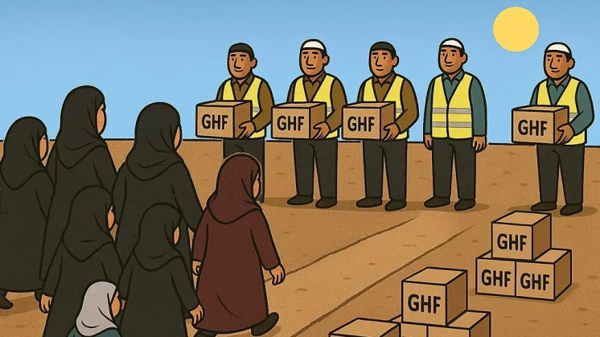
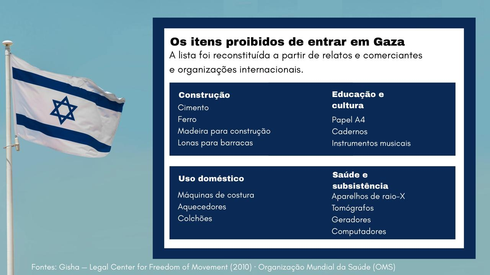
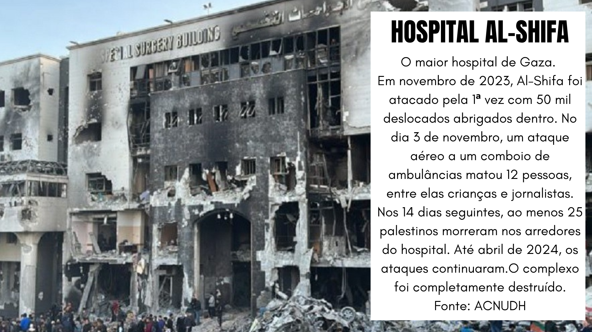

Artigo 15 da Declaração Universal de Direitos Humanos
1. Todo ser humano tem direito a uma nacionalidade.,
2. Ninguém será arbitrariamente privado de sua nacionalidade, nem do direito de mudar de nacionalidade.
“Foi a pior sensação da minha vida. No caminho todo, fiquei pedindo perdão para Deus.”
Assmaa Abu Aljedian, brasileira que estava presa em Gaza, descreve assim a primeira vez que foi atrás de ajuda humanitária, em um momento em que o território passa por um conflito que teve seu último estopim em 7 de outubro de 2023.
Ela, seus quatro filhos e marido estavam há meses sem comer, quando, no dia 24 de julho, a Fundação Humanitária de Gaza (GHF) declarou o “Dia da Mulher” e anunciou que iria distribuir uma cesta básica para mulheres em Gaza. Assmaa decidiu ir.
Ela, sua amiga e sua irmã foram juntas. Caminharam por horas até chegar ao local, que era afastado e vazio.

“Eu dormi a noite inteira lá. Era um frio enorme, um deserto. Você imagina um deserto, não tem nada na sua frente, você espera toda a noite até vir esse tanque”, a imagem que Assmaa relata sobre o ocorrido é bem diferente da postada pela Fundação para divulgar a ação.
Ela descreve que, quando foi anunciada a abertura do local para pegar os suprimentos, aquele deserto se tornou um campo de batalha. Pessoas correndo, uma em cima da outra, tudo para conseguir a cesta básica. Mas, quando chegaram aos caminhões, não havia mais nada lá.
“Quando a gente chegou lá para dentro, falaram que não tinha ajuda humanitária, tinha que sair. Teve mulheres que não aceitaram sair, aí começou o tiroteio”, conta a moradora de Gaza. “Eu ficava vendo o risco vermelho da bala saindo, o barulho dela, eu fiquei tremendo.”
Sobre esse episódio, a BBC publicou uma matéria intitulada “Um centro de ajuda humanitária em Gaza ofereceu um dia "exclusivo para mulheres". Isso não impediu os assassinatos.” que reportou a morte, nesse mesmo dia, da palestina Mary Sheikh al-Eid. Segundo essa publicação, em resposta ao veículo, as Forças de Defesa de Israel (IDF) disseram que “identificaram suspeitos que se aproximaram, representando uma ameaça para as tropas” e “dispararam tiros de advertência”, mas afirmaram que não tinham conhecimento de vítimas. “No geral, o dia foi um grande sucesso, com a participação de muitas mães e filhas”, anunciou o porta-voz da Fundação após o ocorrido.
A diferença entre o relato de Assmaa e a versão da fundação ajuda a explicar por que a atuação da GHF se tornou alvo de críticas. Organizações humanitárias e organismos internacionais relatam preocupação com a vida dos palestinos nas ações da GHF, como em 2025, na matéria da “Médicos sem Fronteiras”, que caracterizou a Fundação como “um esquema mortal que precisa ser desmontado”.
A GHF foi uma forma de substituição do ecossistema de ajuda humanitária em Gaza de organizações não armadas mundiais, como a UNRWA, a OMS e a ONU. Com patrocínio dos EUA e de Israel, ela foi criada em maio de 2025, com o objetivo de fornecer alimentos para as pessoas no sul e centro de Gaza.
O motivo da troca foi uma acusação de Israel sobre a interferência do Hamas nessas atividades. Em um comunicado publicado pelas Forças de Defesa de Israel (IDF), “As Forças de Defesa de Israel revelam como a organização terrorista Hamas explorou sistematicamente a ajuda humanitária em Gaza para financiar atividades terroristas”. Eles acusam o Hamas de confisco de ajuda humanitária, contrabando e mecanismo financeiro de lavagem ("Hawala"). Como provas, ofereceram um suposto documento apreendido do grupo que determinava o confisco automático de 15% a mais de 25% de toda a ajuda humanitária que entrava. Além disso, afirmam que um estudo feito pela inteligência de Israel (IDF assessments) concluía que, junto com membros da Turquia e fundos do Irã, o Hamas comprava "excesso" de ajuda para revender aos palestinos.
Entretanto, uma análise interna da Agência dos Estados Unidos para o Desenvolvimento Internacional (USAID), obtida pela Reuters em julho de 2025, examinou 156 incidentes de roubo ou perda de suprimentos financiados pelos EUA entre outubro de 2023 e maio de 2025 e não encontrou nenhum relatório atribuindo o desvio ao Hamas.
Mas as críticas sobre a fundação começaram a se expandir. Organizações internacionais também alertaram para o crescente número de palestinos mortos enquanto tentavam conseguir ajuda humanitária.
Na penúltima semana de julho de 2025, o porta-voz do escritório do Alto Comissariado das Nações Unidas para os Direitos Humanos (ACNUDH), Thameen Al-Kheetan, divulgou que, até 21 de julho, registraram 1.054 pessoas mortas in Gaza enquanto tentavam obter comida, sendo 766 mortas próximas de locais da GHF.
As mortes registradas nos centros de distribuição de alimentos representam apenas uma parte da crise humanitária no território. Desde 7 de outubro de 2023 até 3 de fevereiro de 2026, cerca de 71.803 palestinos foram mortos em Gaza, segundo dados do Fundo das Nações Unidas para a Infância (UNICEF).
O que acontece hoje em Gaza é classificado pelas Nações Unidas como genocídio, que é atestado de forma extensa por relatorias especiais e comissões de inquérito da organização. Além deles, a mais alta corte judicial da ONU (o TIJ) confirmou a razoabilidade do crime e fez um processo formal contra o Estado de Israel.
Ou seja, o que Assmaa viu e sentiu naquele dia não foi um episódio isolado. Foi o resultado de décadas de conflito e perda de direitos básicos. Para entender por que uma mulher, que se considera brasileira, não consegue sair de Gaza e precisa arriscar sua vida para pegar ajuda humanitária, é preciso voltar bem antes de 7 de outubro de 2023.
Desde 1948, data da criação do Estado de Israel, muitos palestinos se viram deslocados e constantemente atacados por atitudes opressoras do Estado ocupante. Um momento marcante foi a Nakba. Ualid Rabah, presidente da FEPAL (Federação Árabe Palestina do Brasil), destaca a importância deste momento para o conflito, pois, segundo ele, “ela não é um ato treslocado dos sionistas. Ela é, na verdade, a consecução de um plano”.
Nakba, palavra em árabe para catástrofe, teve início duas semanas após a aprovação da Resolução 181 da ONU, que recomendou a partilha da Palestina. Segundo Rabah, foi o sinal para que uma limpeza étnica planejada fosse colocada em prática. O momento resultou em 531 localidades destruídas, ao menos 70 massacres, 15 mil mortos e 88% da população palestina originária expulsa dos territórios tomados, segundo o Escritório Central de Estatísticas da Palestina (PCBS).
“Os palestinos não foram privados de nacionalidade. O que eles estão sendo privados é de quase todos os direitos que teria um nacional”, explica o professor titular de Direito Internacional Público da Faculdade de Direito da Universidade de São Paulo (USP) e ex-candidato brasileiro ao Tribunal Internacional de Justiça, Paulo Borba Casella.
Ter uma nacionalidade é a existência de um vínculo jurídico entre uma pessoa e um Estado. Isso significa, de forma prática, que o Estado reconhece aquela pessoa e assume certos deveres em relação a ela, como proteção diplomática, acesso a direitos civis e ter sua identidade jurídica reconhecida.
Mas o caso da Palestina acaba sendo mais complexo, já que, por mais que o povo tenha um Estado, ele não possui soberania sobre seu território.
A Palestina teve seu Estado proclamado em 1988, quando a Organização para a Libertação da Palestina (OLP) declarou independência. Logo após a proclamação, o Estado foi reconhecido oficialmente por dezenas de países e ganhou o status de Estado observador nas Nações Unidas.
No entanto, os palestinos continuaram a não ter soberania plena do território, o que levou à tentativa de negociação entre Israel e representantes palestinos no primeiro Acordo de Oslo. Em 1993, as negociações iniciais foram feitas em segredo na Noruega. Nesse momento, aconteceu o primeiro reconhecimento mútuo entre a OLP, que reconheceu o direito de Israel existir, e Israel, que reconheceu a OLP como a representante oficial dos palestinos, prevendo o direito dos palestinos ao autogoverno nas zonas demarcadas.
Contudo, os pontos centrais do acordo não foram cumpridos, mesmo depois de concluída uma segunda rodada de negociações (Acordos de Oslo II). A tentativa de um processo de paz não funcionou, com justificativas divergentes de culpa: Israel afirma que Arafat (um dos representantes da OLP) negociou de má-fé e não conteve grupos extremistas, enquanto o lado palestino afirma que o governo israelense nunca deixou de ocupar militarmente a região e continuou avançando nas construções de assentamentos.
Com essas e outras tentativas falhas de acordo, durante anos esse reconhecimento e poder que viria de um Estado independente ficou apenas no papel em todas as ocasiões, já que Israel continuou a ocupar militarmente o território e impede a soberania completa desse Estado.
“Essa é uma das contradições quando o governo de Israel diz que eles são um Estado democrático de direito. Talvez para os judeus israelenses, mas para os não judeus israelenses e para os palestinos, é um regime militar de ocupação”, afirma o professor Casella.
Sem um Estado para proteger, a atual situação dos palestinos se torna crítica. Principalmente em momentos de guerra, como o atual vivido em Gaza, a falta de direitos básicos fica ainda mais extrema.
Ao considerar toda essa situação, o presidente da FEPAL, Ualid Rabah, afirma que os palestinos hoje não têm cidadania. “Não existe cidadania plena para os palestinos”.
O concept de cidadania, segundo o professor Casella, está diretamente ligado à nacionalidade. “A nacionalidade é um vínculo jurídico e ela se exprime na cidadania, que comporta direitos políticos que você pode exercer, como votar, ser votado e fazer valer os seus direitos, inclusive contra a administração do Estado onde você vive.” No caso dos palestinos, ele complementa: “Eles não têm cidadania, porque estão num regime de ocupação militar”.
Esse cenário tem consequências práticas para a população palestina, como observa Vinícius Rodrigues Vieira, doutor em Relações Internacionais pela Universidade de Oxford e professor da FAAP, que a própria existência política deles acaba condicionada ao controle de Israel. “Nós temos aí toda uma conjuntura em que a existência política dos palestinos depende, na prática, de como Israel controla o acesso a recursos nesses dois territórios: Gaza, agora destruída, e a Cisjordânia, com partes significativas ocupadas por Israel”.
Rabah vai além: além da falta de soberania, os palestinos “não podem ter acesso pleno aos recursos naturais, especialmente a água, e vivem em bloqueios”.
Sobreviver em Gaza
“Hoje eu não comi”, relata Assmaa Abdo Eldijan, palestina brasileira que mora atualmente na Faixa de Gaza.
O problema da falta de alimento é apenas um entre vários. Quem está atualmente morando em territórios de guerra enfrenta dificuldades em diversos fatores. Falta de eletricidade e o bloqueio de gás, por exemplo, são outras duas situações vividas por Assmaa. “Fui tentar comprar comida pronta, porque estou sem condições de voltar para a lenha”.
Sem gás há uma semana, a única opção de sua família é usar a lenha para fazer fogo, o que já é um avanço, pois alguns meses atrás, Israel não permitia a entrada de gás em Gaza. E, mesmo sendo liberado atualmente, é racionado.
“Eu nem tenho lenha para poder ascender. Não estou com a mesma saúde mental ou física para quebrar a lenha, ficar uma hora tentando ligar a lenha, me queimando, queimando minha mão, meu pé, minha roupa. Eu sinto que minha respiração piorou muito com a lenha, a fumaça preta que entra dentro do seu corpo.”
Assmaa mora em Gaza desde 2006, quando saiu do Brasil para visitar seus avós e não conseguiu mais voltar. Ela nasceu nos Emirados Árabes Unidos, mas sua família é palestina. Seu pai tinha o sonho de viajar e, por conta disso, saiu de Gaza, tendo ela e seus irmãos nos Emirados. Quando ela tinha 4 anos, a família se mudou para o Brasil, e ali ficaram até ela completar 20 anos.
Uma viagem que era para durar 3 meses foi se estendendo por conta do conflito. Em 2006, o Hamas venceu as eleições palestinas, o que desencadeou uma série de bloqueios, tanto de Israel quanto de países como Estados Unidos e o bloco da União Europeia. Em uma situação crítica, Assmaa se viu presa na Palestina, já que ainda não possuía, oficialmente, a naturalização brasileira.
Ela conta que, quando foi para lá, estranhou tudo. “A gente voltou mil anos para trás”.
O que mais a assustou foi o retrocesso do local, principalmente em relação à tecnologia e modernidade. Internet, computador e celulares não eram comuns na Palestina, segundo ela.
A restrição moderna
A internet de Gaza, até hoje, funciona em 2G, e sistemas mais avançados não são apenas não implementados por conta do conflito, mas são estritamente proibidos por Israel, como é o caso da fibra óptica. Organizações como o Banco Mundial acompanham a situação energética da Palestina há anos. Em 2021, publicaram um comunicado de imprensa detalhando um financiamento de projeto de desenvolvimento digital nos territórios palestinos, expondo exatamente essa restrição frequente imposta por Israel e o atraso do território.
Em 1993, com a assinatura dos Acordos de Oslo, a Autoridade Palestina foi concedido o direito de estabelecer uma infraestrutura independente de telecomunicações, mas isso nunca aconteceu.
Depois de 7 de outubro, a situação apenas se agravou. Segundo o Ministério de Telecomunicação e Economia Digital da Palestina, em agosto de 2024, cerca de 75% das redes de comunicação de Gaza foram destruídas durante o conflito. E o que resta é controlado por Israel. As 2,3 milhões de pessoas que moram em Gaza, além de estarem isoladas fisicamente pelo bloqueio, passam a ser isoladas da forma mais moderna possível: online.
O efeito dominó entre energia e água em Gaza
Israel controla a energia do território ocupado. “Quando eu vim em 2006, já tinha o problema da eletricidade: ela vinha às 8 horas e cortava às 20 horas. Isso eu já estranhava”, relembra Assmaa. A energia de Gaza é fornecida apenas pela Corporação Elétrica de Israel, uma estatal.
Rafat Alnajjar, palestino nascido em Gaza que morou no território até 2020, quando veio ao Brasil, também conta sobre sua experiência com a energia. “Tem dias que ela chegava 6 horas por dia, tem dias que chegava 2, 4, às vezes 1, às vezes não tem energia nenhuma”.
O problema da energia impacta na distribuição da água, que também entrou nesse racionamento. “Tinha por mais ou menos duas horas por dia. Aí tem que correr pra encher as caixas, encher os galões, as garrafas, tudo. Deixar preparado”, conta Alnajjar.
Em dezembro de 2023, a UNICEF publicou um comunicado à imprensa alertando que crianças em Gaza não tinham acesso a 90% do seu uso normal de água. Segundo o alerta, as pessoas estavam lutando para acessar 3 litros de água por dia.
Mas, como relatado por Rafat, esse problema não começou apenas após a recente escalada do conflito em 2023. Em outubro de 2009, a Anistia Internacional acusou Israel de negar aos palestinos o direito de acesso à água adequada ao manter o controle total sobre os recursos hídricos compartilhados e adotar políticas discriminatórias.
Isso porque a situação hídrica em Gaza é de dependência de Israel. Como o território não tem fontes naturais de água potável, para acessá-las eles dependem de tubulações, as quais grande parte dessas estruturas são controladas pela empresa israelense Mekorot.
A outra opção dos palestinos da Faixa de Gaza para conseguirem água seria através das usinas de dessalinização, ou seja, pegar água do mar e torná-la potável.
Eles possuem três grandes plantas de água do mar e algumas plantas menores privadas. O problema é que o funcionamento e a manutenção delas estavam sujeitos às ações do Estado israelense em três frentes: eletricidade, combustível e peças de reposição.
As peças de reposição eram muitas vezes barradas por Israel, que as classificava como “uso duplo”, afirmando que poderiam ser usadas pelo Al-Qassam, braço armado do Hamas. Combustível para os geradores precisavam de autorização israelense para entrar. E a eletricidade que alimenta as usinas era controlada por linhas israelenses.
Diversas organizações de direitos humanos documentaram ao longo dos últimos anos que não só existia essa escassez do povo palestino, mas uma desigualdade entre eles e israelenses em relação ao acesso à água.
Em 2009, relatórios da Anistia Internacional e do Banco Mundial mostravam que o consumo diário palestino per capita era em média de 70 a 76 litros, enquanto o consumo de cidadãos israelenses variava entre 300 e 350 litros ao dia, anos antes do estopim de 2023.
E essa situação se manteve por mais de uma década. O relatório “Parched”, publicado em 2023 pela organização israelense B’Tselem com dados referentes a 2020, informou que os israelenses consumiam em média 247 litros por pessoa ao dia, em contraste com os palestinos da Cisjordânia, que dispunham de apenas 82,4 litros.
Todos esses números apresentados estão abaixo dos 100 litros mínimos diários recomendados pela Organização Mundial da Saúde para garantir condições básicas de saúde e higiene.
Diante desse impasse, a reportagem foi atrás de uma resposta da Embaixada de Israel no Brasil, que foi endereçada ao Sr. Or Keren, solicitando um posicionamento oficial sobre o fornecimento limitado de eletricidade a Gaza antes de outubro de 2023, período em que o território recebia em média 10 horas diárias de energia, e las razões para as restrições ao acesso à água impostas à população de Gaza. Até o fechamento da reportagem, a Embaixada não havia respondido ao contato.
Acesso a educação
Mas o bloqueio de Israel também envolve outras coisas, como conta Rafat: “Eles proibiam o papel entrar, caneta. Coisas que não têm pra quê. Não tem por que você proibir essa coisa de entrar”.

Israel justificou a proibição afirmando que ela tinha “uso duplo” e poderia ser usada pelo braço armado do Hamas. Sobre isso, o doutor em Relações Internacionais Vinícius Vieira explica o argumento usado: “Nesse caso do uso duplo (...), é um processo de securitização, ou seja, da sua segurança determinar qual é a extensão de fato dada aos palestinos em termos de cidadania”.
A securitização é quando algo é tornado uma questão de existência e de sobrevivência por um país. Vieira explica que “é quando se torna uma questão não apenas de segurança nacional, mas vai até além daquilo, é securitizado a ponto de dizer: ‘olha, se a gente não enfrentar isso dessa maneira, o país deixa de existir’”.
Ao mesmo tempo que esse argumento é considerado legítimo, já que se baseia na continuidade da existência do país, segundo o doutor de RI, deveria existir um ponto de equilíbrio que Israel não está respeitando. Segundo ele: “o país tem o direito à autodefesa (...). Mas aí entra o princípio básico, também não escrito, às vezes está codificado em um constatado, que é o princípio da proporcionalidade”. Especificamente sobre Gaza, ele complementa: “desproporcional a ação que foi feita em Gaza, porque Gaza virou ali um cemitério a céu aberto e, claro, um campo de entulho, porque os prédios foram todos destruídos”.
Assim, com o bloqueio de objetos de uso diário baseados no argumento de uso duplo, diversos aspectos da vida das pessoas que vivem em Gaza são diretamente afetados, como o que aconteceu com Rafat durante seu período na universidade. Entre 2013 e 2018, período em que o palestino estava estudando, o problema em relação à educação não era a infraestrutura em si, mas esses bloqueios de Israel. “A gente tem o laboratório, mas o material não chega. ‘Ah, tá em falta’, ‘Não entra em Gaza’”, explica o palestino.
Exatamente por esse motivo, Rafat saiu de lá. Ele conta que, quando era mais novo, as pessoas já percebiam que ele tinha aptidão para a vida acadêmica. No começo, seu pai não queria que ele se mudasse, pois tinha medo que ele perdesse a aproximação com a cultura e religião deles. Mas após se formar em matemática, as dificuldades em achar empregos e salários que fossem suficientes fizeram Rafat e seu pai mudarem de ideia. “Meu pai falou: ‘Aqui não tem futuro para você. Você precisa sair, voar, ver o mundo, crescer. E de lá você manda ajuda para cá’”.
Mesmo não querendo deixar seu país, o palestino foi procurar uma oportunidade de ajudar sua família de outro lugar, já que não conseguia fazer isso de Gaza. Mas isso foi antes de 7 de outubro, e desde então, a situação se agravou.
Em janeiro de 2026, em uma conferência realizada em Nova York, o porta-voz do secretário-geral da ONU denunciou o bloqueio de materiais escolares, como os quais Rafat mencionou, feito por Israel. O porta-voz afirmou que as autoridades israelenses justificaram o bloqueio sob o argumento de que a educação não é uma atividade essencial durante a primeira fase do cessar-fogo.
Além dos materiais, também não existe mais estrutura. Segundo informações do relatório da Agência das Nações Unidas de Assistência aos Refugiados da Palestina no Oriente Próximo (UNRWA), publicado em 2026, mas com informações referentes ao final de 2025, o sistema educacional de Gaza está em colapso.
Mais de 97% de todas as escolas foram danificadas ou destruídas, sendo que mais de 90% delas precisam de reparos totais ou significativos para funcionarem novamente.
Além disso, as instalações da UNRWA, especialmente as escolas que sobraram, foram transformadas em abrigos para os mais de 1 milhão de pessoas deslocadas.
Assmaa, que ainda mora em Gaza, revela sua preocupação com a educação atual das crianças que moram no território. “Não tem escolas, não tem ensino fundamental, as crianças já se perderam, tem uma geração totalmente perdida em relação aos estudos.” Para ela, que possui quatro filhos, a preocupação é inclusive com eles: o único local de ensino que frequentam atualmente é uma tenda, três vezes por semana. “Você está falando de uma tenda, sem cadeiras, sem nada, sentado no chão… Então que tipo de estudo eles estão tendo? Meu filho está na terceira série, não sabe ainda nem ler nem escrever.”
“Não considero que isso é uma escola. Eles tentam resolver mais problemas psicológicos com as crianças do que realmente ensinar para eles algo”, conclui Assmaa.
O setor de saúde em colapso
Os medicamentos são outra grande questão para as pessoas que moram em Gaza.
Em 2025, o Ministério da Saúde em Gaza fez um alerta sobre a escassez de medicamentos e material médico, que estava tornando o território incapaz de lidar até com emergências. De acordo com o comunicado, 321 medicamentos considerados essenciais estavam completamente indisponíveis, uma escassez de 52% dos medicamentos, e a falta de material poderia privar cerca de 200 mil doentes de cuidados de emergência.
“É um problema muito grande. Uma parte muito grande da medicina aqui em Gaza, dos médicos ou até mesmo dos aparatos foram destruídos, foram mortos”, conta Assmaa.
Segundo a coordenadora do Médicos Sem Fronteiras em Jerusalém, Damares Giuliana, cerca de 94% dos hospitais em Gaza não estão funcionando porque foram bombardeados, e os 6% que funcionam também estão danificados.
A justificativa de Israel para essas ações é uma acusação ao Hamas de ter militarizado as instalações hospitalares. Depois de terem sido acusados pela ONU de crimes de guerra, o Estado publicou uma resposta oficial ao relatório, na qual argumentava que os hospitais em Gaza seriam centros de comando do Hamas.
A prova central desse argumento é exemplificada por Israel através da operação no hospital Al-Shifa. O governo afirma que expôs uma rede de túneis do braço armado do Hamas, Brigadas Al-Qassam, sob o complexo, equipada de portas blindadas e salas operacionais ligadas à infraestrutura elétrica do hospital. As Forças de Defesa de Israel (IDF) relatam ainda ter encontrado armas escondidas e evidências de que reféns foram levados ao local e afirmam ter avisado previamente o hospital e distribuído suprimentos médicos.

O Alto Comissariado das Nações Unidas para os Direitos Humanos (ACNUDH) expressou reservas quanto à validade das provas apresentadas por Israel como justificativa. Além de afirmar que a verificação independente não foi possível, a organização caracterizou as evidências como limitadas e contraditórias, e os vídeos divulgados por Israel mostravam uma infraestrutura muito mais limitada do que inicialmente sugerido.
As imagens de armas foram consideradas pela ACNUDH como “um pequeno número de armas leves”, insuficiente para justificar a conclusão de que hostilidades estariam sendo lançadas a partir do hospital.
Outro questionamento foi a proporcionalidade: mesmo que tais funções estivessem sendo exercidas no local, isso não tornaria o hospital um alvo militar legítimo.
Mas os questionamentos não têm como base apenas esse episódio, e sim os constantes ataques sobre o ecossistema de saúde do território. Entre 7 de outubro de 2023 e o final de junho de 2024, mais de 500 profissionais de saúde foram mortos em Gaza, segundo o Escritório de Direitos Humanos das Nações Unidas.
Ademais, um estudo feito pela Coalizão para Proteção da Saúde em Conflitos relatou 3.623 ataques contra o serviço de saúde em 2024 no mundo, dos quais aproximadamente 940, mais de um quarto do total, foram na Faixa de Gaza. Além disso, atribuem 98% dos casos reportados de ataques ao sistema de saúde em Gaza ao IDF.
Assmaa comenta outra dificuldade: além de tudo ser escasso, custa dinheiro, e para quem vive em guerra, acaba sendo uma escolha entre comer ou comprar remédio. “Você está desempregado. Hoje, o que é mais importante? Você comer, colocar uma roupa ou até mesmo o remédio?”
O que mostra o preço de uma caixa de ovo
O relatório mais recente do Programa Mundial de Alimentos (WFP), publicado em março de 2026, destacou que 81% dos comerciantes em Gaza enfrentam instabilidade de preços em diversos produtos, de combustíveis a vegetais. Produtos como tomates, farinha de trigo e ovos foram os que mais aumentaram de preço, resultado atribuído à destruição de 85% das instalações agrícolas de Gaza, que tornam o território cada vez mais dependente de importações constantemente bloqueadas.
Assmaa relata esse cenário: “Eu e meus quatro filhos, mais marido, somos 6 pessoas. Para você comprar o ovo que custava… Vamos supor R$15, hoje a caixa de ovo custou R$100, depois baixou para R$80, depois R$50, aí hoje está R$25. Mas quando você fala de uma caixa de ovo, tô falando de trinta ovos.”
“Infelizmente, uma coisa que custava talvez dez reais, hoje está custando 50, 60. Então, às vezes, você pode não ficar sem comida, mas você fica sem desodorante.”
Com essa instabilidade, muitas pessoas sobrevivem com alimentos distribuídos através da ajuda humanitária. “Eles iam para um local, tinha que esperar o tanque sair para poder entrar e pegar ajuda humanitária.” Mas, como não existia organização nos locais e as pessoas estavam desesperadas atrás de comida, a situação facilmente saía do controle. “Tinha algumas pessoas que não escutavam, ou um empurrava o outro pela quantidade de pessoas que estavam lá, aí começava o tiroteio. Vinha tiroteio de qualquer lugar. Uma bala caiu na perna do meu marido.”
Seu marido, que já estava com o dedo quebrado, ficou incapacitado de trabalhar por conta das feridas e do contexto da guerra, o que só piorou a situação da família.
Um dos casos mais conhecidos de violência em centros de distribuição de ajuda humanitária foi o chamado “Massacre da Farinha”, que ocorreu em 29 de fevereiro de 2024. Segundo dados da ONU publicados em 7 de março, mais de 112 pessoas reunidas para coletar farinha em Gaza foram mortas por forças israelenses.
As Forças de Defesa de Israel (IDF) admitiram ter disparado “tiros de advertência”, justificando que os soldados se sentiram ameaçados pela multidão, mas culparam o pisoteamento e o atropelamento pelos caminhões pela maioria das mortes. A ONU contestou essa versão após visitar os hospitais onde os feridos ficaram, alegando que a maioria das vítimas apresentava ferimentos de armas de fogo, como tiros no peito, cabeça e pescoço.
Nesse cenário, em agosto de 2025, o IPC (Classificação Integrada de Segurança Alimentar — organismo da ONU) declarou a fome em Gaza, a primeira vez que a fome é declarada no Oriente Médio. No documento divulgado, o órgão explicita que classificar a fome significa que a categoria mais extrema é acionada quando três limites críticos são violados, sendo eles: privação extrema de alimento, desnutrição aguda e mortes relacionadas à fome. Segundo eles, todos esses critérios foram atendidos com base em evidências razoáveis.
Isso aconteceu logo após o atual primeiro-ministro de Israel, Netanyahu, em março de 2025, bloquear toda ajuda humanitária a Gaza, dizendo que era uma forma de pressão sobre o Hamas. Depois de 11 semanas de bloqueio completo, Israel afirmou permitir a entrada de ajuda limitada em Gaza.
Mas, em abril de 2026, meses depois dessa declaração, as autoridades israelenses seguiram impedindo organizações, como a UNRWA, de levar ajuda humanitária para dentro de Gaza, e permitindo apenas a GHF, acompanhada do exército israelense.
Para Para a Human Rights Watch, organização internacional independente de direitos humanos, as restrições deliberadas de Israel à ajuda humanitária constituem um crime de guerra.
As violações de direitos humanos ocorrem sistematicamente por parte israelense, segundo o professor Vinícius Vieira, que afirma que, mesmo Israel não sendo obrigado por nenhuma lei a reconhecer o Estado palestino, como decidiu ser parte da Organização das Nações Unidas, possui um compromisso de respeitar tratados e normas internacionais de direitos humanos. “As violações de direitos humanos ocorrem sistematicamente. Elas, inclusive, podem ser interpretadas dentro da própria lei israelense como uma violação à própria lei israelense pelo fato de que Israel faz parte ali da ONU e, portanto, aderiu aos tratados.”
O Artigo 15 da Declaração Universal de Direitos Humanos garante a todos o direito a uma nacionalidade. Mas, para os palestinos, isso fica apenas no papel.
Para Rafat, que teve que se refugiar em outro país para buscar condições de vida melhores, está no processo de tirar a naturalização no Brasil.
Assmaa só conseguiu voltar para o Brasil no final de maio deste ano. Mas seus anos morando em Gaza não foram fáceis. “O cotidiano hoje para uma mulher, para uma pessoa que vive aqui na Palestina, é muito ruim. Muito, muito ruim. Você não tem casa, você não tem escola. Você perdeu sua dignidade, a sua moral”, relatou ela no final de 2025, quando ainda morava em territórios palestinos.
Ela explica que o motivo de ter ficado presa em Gaza foi um descuido de sua mãe: “Minha mãe deu entrada no processo quando a gente estava perto de viajar. Realmente na época a gente achou que era só uma visita, e ela ia voltar e assinar”. Como a volta não aconteceu, o processo de naturalização de Assmaa não se completou, mesmo tendo morado 16 anos no Brasil, suficientes para uma naturalização ordinária, que segundo o governo brasileiro exige comprovação de quatro anos de residência contínua.
A questão que impediu a família de concluir o processo foi financeira e burocrática: “Ela, na época, não tinha uma situação financeira muito boa”. Embora o processo seja isento de taxas, existem gastos adicionais, principalmente em relação à dificuldade dos palestinos na obtenção de documentação, que muitas vezes acaba gerando a necessidade de contratar um advogado.
Mas o pai de Assmaa ficou no Brasil, e durante o tempo em que ela ficou em Gaza, ele a ajudou a completar sua naturalização. Mas seus quatro filhos, nascidos em Gaza, não possuíam passaporte. “Deu certo para mim e para o meu marido, mas aí veio a questão dos meus filhos, que não têm passaporte.”
Enquanto estava em Gaza, Assmaa começou a postar vídeos nas redes sociais pedindo ajuda para voltar ao Brasil. Em 22 de maio de 2025, o portal Agência Brasil publicou a resposta do Ministério das Relações Exteriores: o governo brasileiro não conseguia tirar Assmaa da Faixa de Gaza.
Segundo o comunicado, o governo só é capaz de negociar a retirada de cidadãos brasileiros ou do núcleo familiar direto de brasileiros e caracteriza a situação como sensível por envolver negociação com autoridades de diversos países.
Assmaa contestou a declaração: “Por que eu não sou brasileira? Por causa de um papel?”